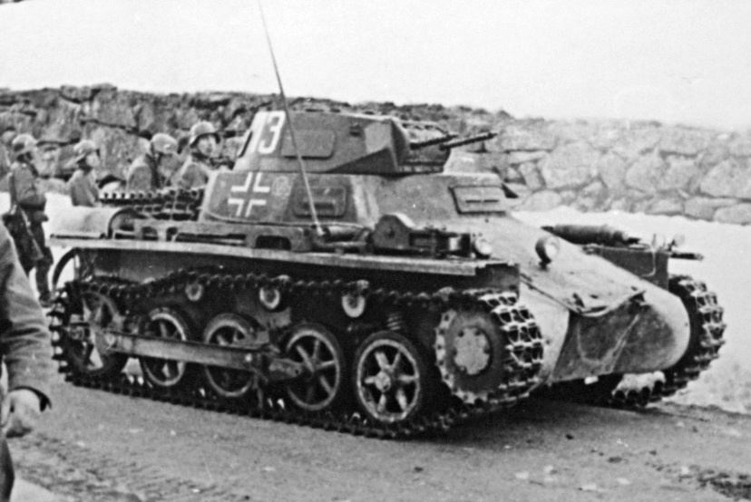
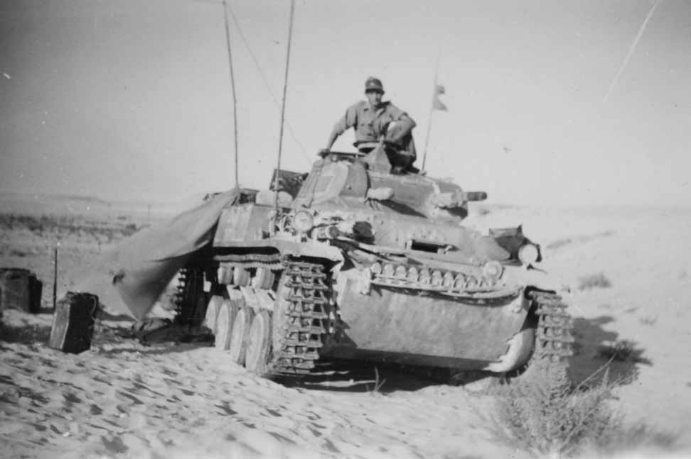
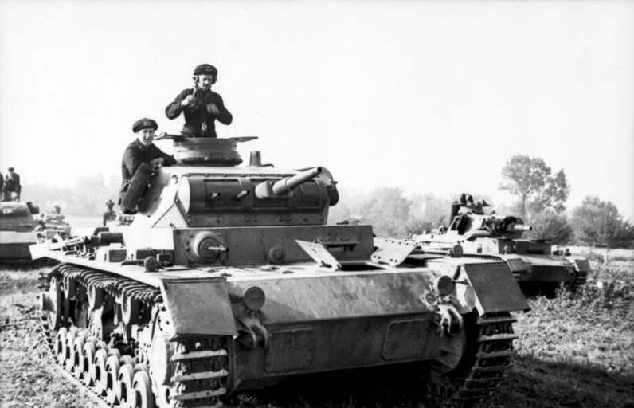
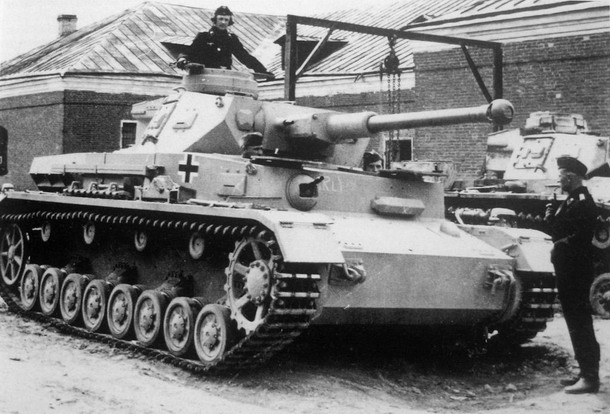
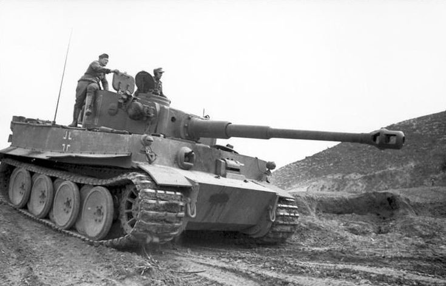
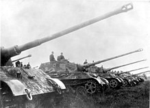
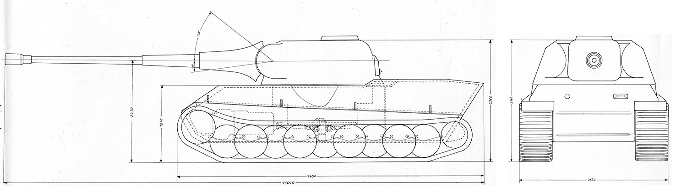
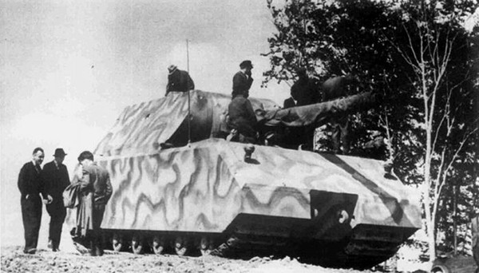
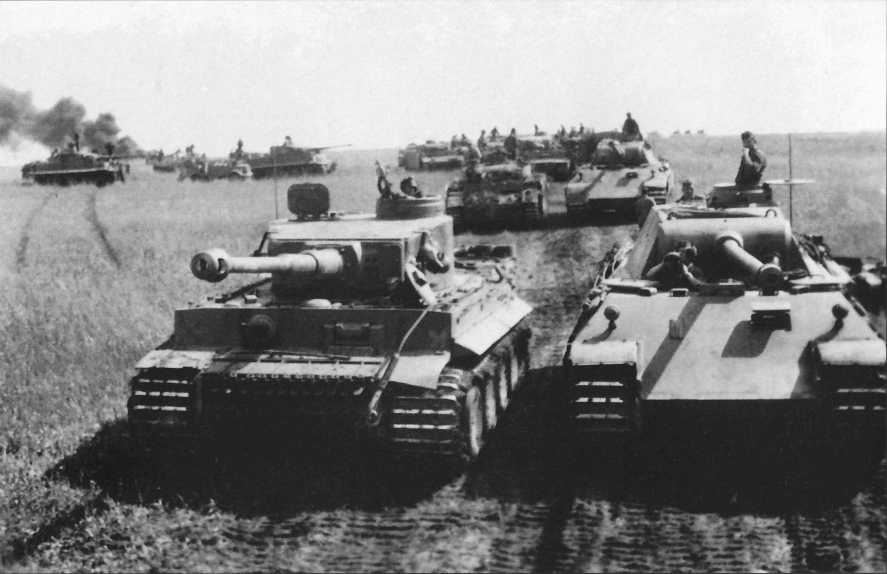

Panzer I
|

Panzer II
|

Panzer III
|

Panzer IV
|
|


Panzer VI
|







German tanks were an important part of the Wehrmacht and played a fundamental role during the whole war, and especially in the blitzkrieg battle strategy. In the subsequent more troubled and prolonged campaigns, German tanks proved to be adaptable and efficient adversaries to the Allies. When the Allied forces technically managed to surpass the earlier German tanks in battle, they still had to face the experience and skills of the German tank crews and most powerful and technologically advanced later tanks, such as the Panther, the Tiger I and Tiger II, which had the reputation of being fearsome opponents.
The word "panzer" is used in English and some other languages as a loanword in the context of the German military. In particular, it is used in the proper names of military formations (Panzerdivision, 4th Panzer Army, etc.), and in the proper names of tanks, such as Panzer IV, etc.
| Tank | Short Description |
|---|---|
Panzer VII  |
The Panzerkampfwagen VII (Löwe) was a super-heavy tank and existed only in blueprints. |
Panzer VIII  |
The Panzerkampfwagen VIII (Maus) is the heaviest fully enclosed armored fighting vehicle ever built. |
